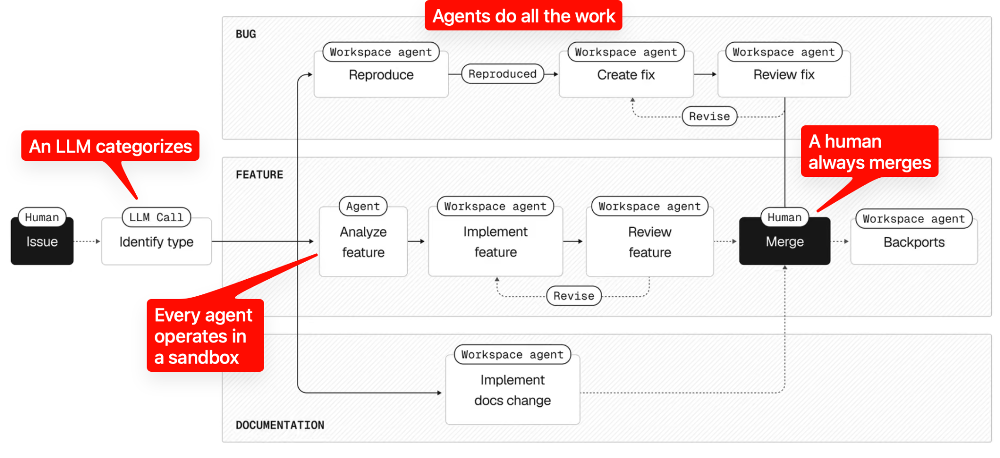
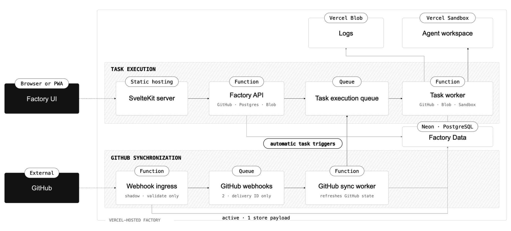
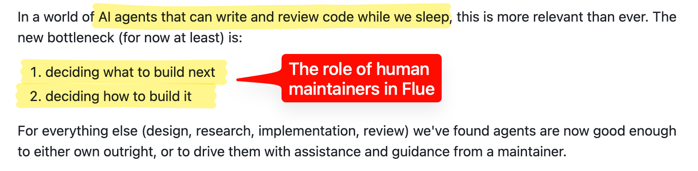
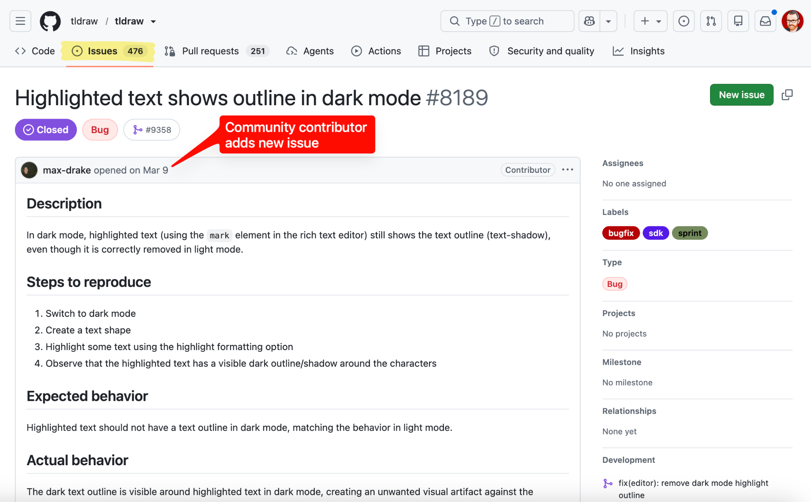
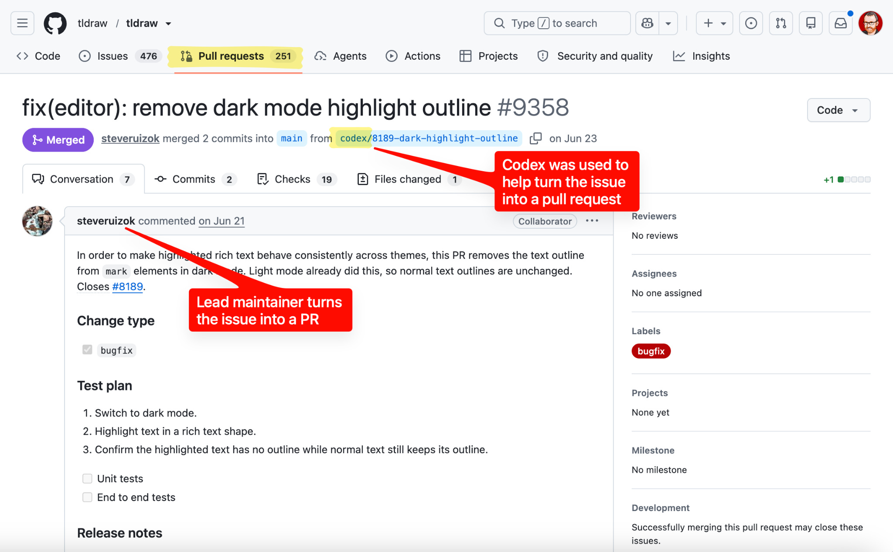

开源项目，开始主动关闭外部 Pull Request。
1,000+
AI SDK 待处理 issue
800
几乎同时积压的 PR
软件工厂
把贡献变成可编排的生产线
问题不再是“有没有人愿意写代码”，而是“谁能让维护者信任这段代码”。
LATENT.SPACE · 2026.09
AI 原生开源项目，正在重写社区贡献规则
基于 Richard MacManus《PRs NOT Welcome》
开源项目，开始主动关闭外部 Pull Request。
1,000+
AI SDK 待处理 issue
800
几乎同时积压的 PR
软件工厂
把贡献变成可编排的生产线
问题不再是“有没有人愿意写代码”，而是“谁能让维护者信任这段代码”。
过去
社区提交 PR
维护者阅读、复现、讨论、修改
→
现在
大量 AI 生成的“看似完整”改动
上下文不足，维护成本转移给项目方
外部代码的边际成本，可能已经高于维护者自己让 agent 写一遍。
这是贡献机制的变化，不是简单的“拒绝社区”。

一组专职 agent 分工：分诊、复现、实现、审查，再交给人类合并。
原图：Vercel AI SDK / Latent.Space 注释；来源：latent.space/p/pr-not-welcome
01
识别与分诊
把请求归类，判断是否值得进入流水线
02
沙箱复现
先证明 bug 存在，再写修复
03
实现与审查
专门化 agent 彼此制衡
04
人类合并
最后的信任与责任仍在维护者
“我们信任的是经过特定提示词优化、长期验证过的 agent 配置。”
— Lars Grammel，Vercel

界面
让人选择、观察、介入
执行空间
隔离上下文与权限
GitHub 触发器
把 issue、PR、检查串起来
原图：Lars Grammel；来源：latent.space/p/pr-not-welcome
25–35%
Vercel 合并的 PR
由工厂 agent 撰写
70–80%
issue
被自动关闭
ASTRO · 62,000 STARS
先让 bot 复现，让用户验证，维护者最后看。
Astro 的 auto-triage 把“每周必须处理的优先队列”变得可执行。

代码请求
PR → 自动关闭
转成 issue 或 discussion
人的判断
报告、讨论、视角、关怀
先决定“做什么”，再让 agent 做“怎么做”
原图：Flue contributor guide；来源：latent.space/p/pr-not-welcome

一个 issue，仍然可以成为 PR

但入口是讨论与问题，而不是陌生代码
把社区贡献限制在仍然重要的地方：报告、讨论、视角与关怀。
— Steve Ruiz，tldraw
如果 agent 写完了大部分代码，PR 还承担什么社会功能？
获得
失去
未来的开源贡献，更像一条信任阶梯：
报告真实问题
参与高质量讨论
在 agent 生产线上协作
成为值得信任的维护者
代码可以被 agent 重写，但方向、判断和责任仍然需要一个社区。
来源：Richard MacManus，《PRs NOT Welcome》，2026-09-01